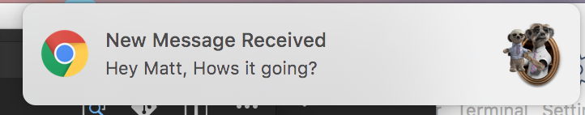
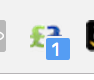
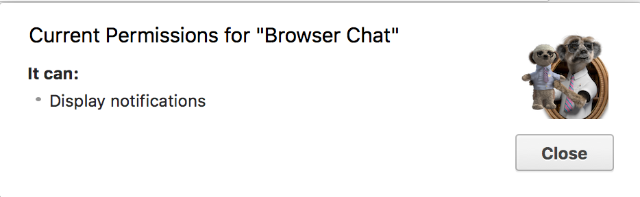

Matthew Lawson - Senior Developer
{
"manifest_version": 2,
"name": "Browser Chat",
"description": "This extension is a mini socket.io chat client",
"version": "0.1.0",
"browser_action": {
"default_icon": "images/browserActionIcon.png",
"default_popup": "dist/index.html",
"default_title": "Get your Quotes!"
},
"icons": {
"16": "images/icon16.png",
"48": "images/icon48.png",
"128": "images/icon128.png"
},
"background": {
"scripts": [
"background.bundle.js"
],
"persistent": true
},
"permissions": [
"activeTab",
"notifications"
]
}
{
"browser_action": {
"default_icon": "images/browserActionIcon.png",
"default_popup": "dist/index.html",
"default_title": "Get your Quotes!"
}
}
Effectively a front end for the extension
More infoFor extensions that only apply to certain pages
Become greyed out if not appropriate for this page
"background": {
"scripts": [
"background.bundle.js"
],
"persistent": true
},
A long running script that is active once chrome is open
Very powerful
"background": {
"scripts": [
"background.bundle.js"
],
"persistent": false
},
A more efficient background page
Sleeps when not required and reacts to events
"content_scripts": [
{
"matches": ["http://www.google.com/*"],
"css": ["mystyles.css"],
"js": ["jquery.js", "myscript.js"]
}
],
Used when you need to interact with the current pages DOM, EG. An adblocker
The script runs in isolation from the current pages javascript
"omnibox": { "keyword" : "matt" },
"icons": {
"16": "16-full-color.png"
},
"background": {
"persistent": false,
"scripts": ["background.js"]
}
Background Script is sent events when the search keyword is activated More Info
"Socket.IO enables real-time bidirectional event-based communication. It works on every platform, browser or device, focusing equally on reliability and speed."
io.on('connection', (client) => {
});
Top level events, EG connection
io.emit(EVENT_NAME, {});
Send message to all connected clients
io.on('connection', (client) => {
client.broadcast.emit(EVENT_NAME, {});
});
Send a message to all connected clients apart from this client.
// io.js
const { global } = require('./constants');
const debug = require('debug')(`${global.APP_NAME}:io`);
const server = require('http').createServer();
const io = require('socket.io')(server, {
// Prioritise websocket first.
transports: ['websocket', 'polling']
});
debug('Start socket.io listening');
io.listen(3000);
module.exports = io;
Leverage node modules to access io object anywhere.
// monitorJoinLeaves.js
const { messageTypes, global } = require('./constants');
const io = require('./io');
const debug = require('debug')(`${global.APP_NAME}:monitorJoinLeaves`);
module.exports = () => {
io.on('connection', (client) => {
broadcastJoinNotification(client);
broadcastConnectionCount();
client.on('disconnect', () => {
broadcastConnectionCount();
broadcastDisconnect();
});
});
}
// monitorMessageSending.js
const { messageTypes, global } = require('./constants');
const io = require('./io');
const debug = require('debug')(`${global.APP_NAME}:monitorMessageSending`);
module.exports = () => {
io.on('connection', (client) => {
//Receive from client broadcast to everyone - but this client.
client.on(messageTypes.SEND_MESSAGE, (message) => {
debug(`Message received & broadcast: ${message}`);
client.broadcast.emit(messageTypes.MESSAGE_TEXT, message);
});
});
};
// index.js
const { global } = require('./constants');
const debug = require('debug')(`${global.APP_NAME}:index`);
const monitorJoinLeaves = require('./monitorJoinLeaves')();
const monitorMessageSending = require('./monitorMessageSending')();
Background script
// background.js
import io from 'socket.io-client';
const socket = io('http://localhost:3000');
socket.on('connect', async () => {
connectionStatus = messagePayloads.CONNECTED;
const packet = {
type: messageTypes.CONNECTION_CHANGE,
payload: connectionStatus,
}
try {
await sendChromeMessage(packet);
}
catch (err) { }
});
API is very similar to server side.
export default (payload) => {
return new Promise((resolve, reject) => {
chrome.runtime.sendMessage(payload, function (response) { //eslint-disable-line no-undef
if (response) {
resolve(response);
}
else {
reject("browserAction not open");
}
});
});
}
Communication between different scripts in the extension uses chrome.runtime.* methods
chrome.runtime.onMessage.addListener( //eslint-disable-line no-undef
(request, sender, sendResponse) => {
switch (request.type) {
...
case messageTypes.SEND_MESSAGE:
// Send to socket client
sendMessageFromClient(request.message);
break;
...
}
}
);
Browser Action
// actions.js
// Redux thunk action creator
export const fetchMessages = (params) => async dispatch => {
try {
const messages = await sendChromeMessage(fetchMessageAction());
dispatch(messageFetchedSuccess(messages));
}
catch(err) { }
}
...
// ChatWindow/index.js
componentDidMount() {
// Fetch messages when chrome window opens
this.props.fetchMessages();
}
...
browserAction has no long life process, it is destroyed everytime it closes
// sendChromeMessage.js
export default (payload) => {
console.log("Sending chromeMessage: ", payload);
return new Promise((resolve, reject) => {
chrome.runtime.sendMessage(payload, function (response) { //eslint-disable-line no-undef
if (response) {
resolve(response);
}
else {
reject("browserAction not open");
}
});
});
}
Wrap sendMessage() callback in a Promise so we can use async / await


"permissions": [
"activeTab",
"alarms",
"notifications"
]

If you are installing from the extension store you will probably be ok.
No new API's since chrome 46 / late 2015